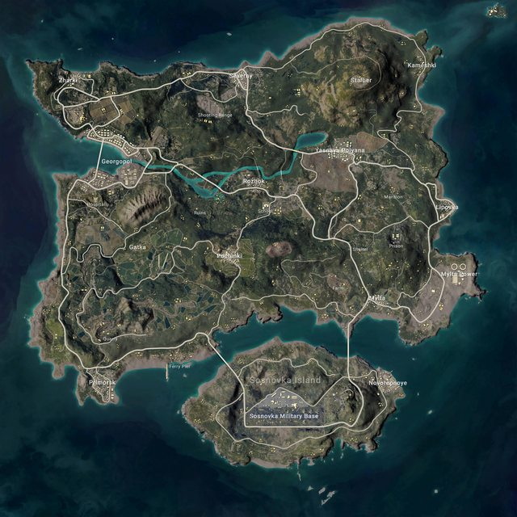

- 배틀그라운드 맵
- 배틀그라운드 무기
- 배틀그라운드 탈것
- 배틀그라운드 시즌패스
- 배틀그라운드 리뷰
에란겔 : 국민맵입니다. 배그가 처음 나왔을때 있었던 맵으로 여러 도시들과 군기지
그리고 논과 밭 산 지구를 축소해놓은듯한 느낌의 이 맵은 초반에는 마을과 도시를 점령하기위한
근접전이 많이 일어나며 후반에는 논과밭을 두고 장거리 교전을 펼치는 식으로 게임이
진행 됩니다. 기본 총기들을 파밍할수 있으며 8배율까지 필드에서 파밍할수 있습니다.

사녹: 쉽게 말해서 정글에서 일어나는 교전입니다. 여러 캠프들이 존재하고 짚으로 만든
집들이 많이 있습니다. 또한 최근 업데이트로 인해 보급품들을 가지고 이동하는 루프트럭
이 나오면서 그 트럭을 깨고 보급품들을 획득한뒤 싸우는게 일방적인 사녹의 플레이
방식입니다. 배율은 6배율까지는 일반적인 파밍으로 얻을수있고 8배율은 보급에서
얻을 수 있습니다.
미라마 : 석유공장들이 많고 호텔과 여러집들 그리고 발전소가 많습니다. 바다와 다리
가있지만 사람들이 많이 가지는 않습니다. 개인적으로 PECADO라는 곳은 존버가 가장 많은곳이라
생각 됩니다. 여포들은 체육관에 내리지만 호텔을 먹은 이상 적이 나오기전까지 한발자국도
움직이지 않는 맵입니다. 8배율까지 필드에서 파밍할수있으며 주로 장거리 교전이
많이 나옵니다.
비켄디 : 처음으로 나온 눈맵입니다. 눈이 내리는 이펙트는 없지만 눈을 밟았을때
남는 발자국 그리고 눈위나 얼어버린 강 위에서 운전시 미끄러지는 디테일을 생각
해보면 참 잘만든 것 같습니다. 또 최근에 기차 시스템이 생겨 기차로 빠르고 쉽게 이동
할수도 있습니다. 물론 시간을 놓치면 기차는 그냥 출발합니다.흰색 길리슈트가 보급품에서
나오며 8배율까지 필드에서 파밍할 수 있습니다.
카라킨 : 사막맵입니다. 높은 산과 여러 공장들이 보이고 지하벙커가 존재합니다.
지하 벙커에서는 확률적으로 좋은 아이템들을 파밍할 수 있고 점착폭탄을 이용해
벽을 뚫을 수 있습니다. 점착폭탄은 사람에게 점착은 안되지만 데미지는 입힐 수 있습니다.
맵이 정말 작다보니 다른 유저들과의 교전도 자주 일어나는 편이며 싸우고 있을때 노출이 정말
쉽기 때문에 항상 뒤를 조심하면서 다녀야합니다. 또한 블랙존이라는 건물을 폭파시키는
이벤트가 존재하는데 블랙존이 발생하면 사이렌이 울리고 맵에 폭파될 건물이 표시됩니다.
그 안에 들어가있다면 즉시 나오시길 적극 권장합니다.